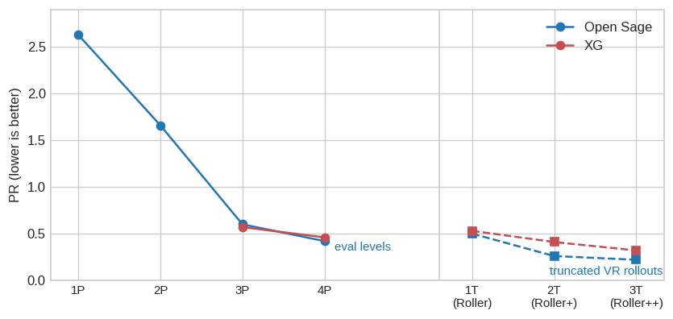

Multi-Ply Search
How GNUBG, XG and BGSage turn one network evaluation into deep play — and the search design meant to take Raccoon past GNUBG 2-ply
Raccoon’s current best network (exp018/ep22) wins +0.047 ± 0.003 points per game against GNU Backgammon at 0-ply (exp020, VR ppg, n=18,000). However, on the BGSage money benchmark (PR, n=14,693), Raccoon currently scores 0.95 vs 2.14 for GNUBG 0-ply — but 0.56 for GNUBG 2-ply. So: our network is much better than GNUBG’s network; GNUBG’s search is still better than our nothing.
The next milestone is therefore not a better network but a search on top of the one we have (exp017 reached the same conclusion from the training side) — with the goal of beating GNUBG 2-ply at matched ply depth, first on the static benchmark, then head-to-head.
This page is the design study for that search. It works through how the three strong engines — GNU Backgammon, eXtreme Gammon (XG), and Open Sage (BGSage) — actually implement lookahead. This includes the pruning machinery that makes it affordable; why all three converged on the same algorithm, and why that algorithm (not MCTS) is the right first implementation for Raccoon. We also investigate the search cost in network evaluations and how bundling, deduplication and batching pay most of that bill, and which parameters matter.
It ends by pre-registering the experiment (exp021) that settles the design choices empirically, and then reports what happened: with two plies of search Raccoon scores 0.43 against GNUBG’s 0.59 at the same depth — but gains less from search than GNUBG does, so the lead narrows at every ply. Everything here is cubeless checker play.
What a ply is
Backgammon’s game tree alternates two kinds of node: decisions, where a player chooses among legal moves, and chance, where the dice choose among 21 distinct rolls — the six doubles with probability 1/36 each, the fifteen non-doubles with 2/36 each. A “ply” of lookahead means pushing the evaluation one roll deeper into that tree before asking the network what it thinks.
Write \(V(x)\) for the network’s value of a pre-roll position \(x\) from the point of view of the player about to roll (Raccoon’s value head, equity/3 in \([-1,1]\)). When it is our turn and we consider a candidate move, the position it produces — an afterstate — is a pre-roll position for the opponent, so its value to us is \(S_0(x) = -V(x)\). That is 0-ply move selection, exactly what lookahead.py does today: score every candidate afterstate in one batched forward pass, play the argmax.
Deeper plies replace the network’s opinion of an afterstate with an average over what can actually happen next:
\[S_n(x) \;=\; \sum_{d} p(d)\,\Big[\, -\max_{a \,\in\, A(x,\,d)} S_{n-1}(x \cdot d \cdot a) \Big]\]
The dot is state transition, not multiplication: \(x \cdot d \cdot a\) reads “position \(x\), then dice \(d\), then move \(a\)” — in OpenSpiel terms, two apply_action calls on a clone. And \(S_n(y)\) always means the value of afterstate \(y\) to the player who just moved into it, which is why the base case negates the network (\(S_0(x) = -V(x)\): \(V\) speaks for whoever is on roll, and that is now the other player).
Read it inside out: for each roll \(d\) the opponent might get, enumerate their legal whole-turn moves \(A(x,d)\), score each resulting afterstate one ply shallower, let the opponent take their best (their gain is our loss — the minus sign), and weight the 21 outcomes by \(p(d)\). A roll with no legal reply — a dance — simply hands the same board back with the turn passed. An \(n\)-ply engine ranks its candidate moves by \(S_n\). This is expectimax: minimax with an averaging layer at every chance node.
Two things follow immediately from the formula. First, cost: each added ply multiplies work by (21 rolls) × (~20 legal moves) — GNUBG’s manual puts it at “about 400 odd” per ply. Second, an asymmetry worth knowing: \(V(x) \ne -V(\text{flip}(x))\), because being on roll is worth something (the tempo). Odd and even plies therefore end the recursion on different players’ rolls and carry slightly different systematic flavours — one reason engines are usually compared at matched, even depths, as exp021 will be.
The numbering trap
The engines do not agree on what to call these depths, and the offset causes real confusion:
| operation | GNUBG | XG / BGSage | TD-Gammon papers |
|---|---|---|---|
| static network eval of the candidate afterstates | 0-ply | 1-ply | 1-ply |
| + average over the opponent’s 21 rolls, best reply each | 1-ply | 2-ply | 2-ply |
| + our best answer to each reply | 2-ply | 3-ply | 3-ply |
So GNUBG’s 2-ply is XG’s and BGSage’s 3-ply — confirmed both by XG’s own study page (“GnuBG 2-ply is equivalent to other bot 3-ply”) and by BGSage’s documentation. Raccoon uses GNUBG’s numbering throughout, because GNUBG is the benchmark (lookahead.py states the same convention). Every ply number on this page is GNUBG-numbered unless it names another engine’s level.
Why one roll of lookahead is worth so much
The value of depth is easiest to see where static evaluation is weakest: counting shots. Suppose a candidate move leaves a blot a direct 6 away from an opponent checker. The rolls that hit are any 6 (11 rolls), plus the indirect combinations 5-1 (2), 4-2 (2), 3-3 (1) and 2-2 (1): 17 rolls of 36. A 0-ply network must have learned to feel that 17/36 — and the wildly different equity swings of being hit in this particular position — through its input features. A 1-ply search doesn’t estimate any of it: the sum over \(d\) literally contains the 17 hitting branches, each scored after the opponent’s actual best hit, and the 19 misses, each scored after the opponent’s actual best quiet play. Search converts pattern recognition into arithmetic. That is why every doubling of engine strength in the table below comes from depth, not from a bigger net — and why exp017’s distillation, which taught the network to imitate 2-ply values, still cannot reproduce them exactly on tactical positions: the network gets one forward pass to summarise a 400-node subtree.
How the strong engines search
All three reference engines implement the same expectimax core. What distinguishes them — and what makes deep search affordable at all — is how aggressively each prunes the candidate list before recursing, and what machinery performs the pruning.
GNU Backgammon: full width, then filters
GNUBG evaluates every legal move at 0-ply, then applies a move filter before the deeper plies: keep at most N extra moves whose 0-ply equity is within a threshold of the best (manual). The shipped “Normal” filter keeps up to 8 moves within 0.16; the manual’s worked example is an opening 4-2 where the best move scores +0.189, so everything below +0.029 is pruned and four moves survive to be evaluated at 2-ply. The named playing levels are just (depth, filter) pairs (manual): World Class = 2-ply with the Normal filter, Supremo = 2-ply with Large (16 within 0.32), Grandmaster = 3-ply Large.
Inside the recursion GNUBG adds a second pruning device: pruning neural networks — tiny nets (a handful of hidden nodes, per mailing-list history) whose only job is to rank an inner node’s candidate moves cheaply so that the full network evaluates just the survivors. The manual reports Jim Segrave’s audit: with pruning nets on, less than 1% of moves change, for a large speedup.
One detail that matters for our benchmark: Raccoon’s harness queries gnubg-nn through candidate_equities, which enumerates all legal moves at the requested ply — no move filter, no pruning nets. The “GNUBG 2-ply” that scores 0.56 on our benchmark is therefore full-width 2-ply, if anything slightly stronger than the World Class setting GNUBG ships. Beating it means beating GNUBG’s search with its pruning risk removed — a conservative target.
eXtreme Gammon: the same ladder, then rollouts
XG is closed source, but its levels are documented well enough to place: its 3-ply is GNUBG-2-ply-shaped, its 4- and 5-ply extend the same recursion, and its headline strength comes from the XG Roller family, which are not deeper plies at all but truncated rollouts with variance reduction: play the position forward some turns with an n-ply policy under stratified dice, stop, evaluate the endpoint with the network, and correct the result with the accumulated dice luck — the same estimator Raccoon built in exp019. BGSage’s engineers, replicating XG’s levels for comparison (ROLLOUT.md), put XG Roller++ at 360 trials truncated after 7 half-moves with 3-ply (XG numbering) decisions early in each trial. On XG’s own 2012 benchmark study, XG Roller++ measures PR 0.11 — with the usual home-field caveat that XG graded itself (studies page).
Open Sage: the same design, fully documented
Open Sage (BGSage) is open source, and its MULTI-PLY.md is the most complete public specification of a modern backgammon search. The parts that transfer:
- An iterative-deepening filter chain. Move selection first scores all candidates at 1-ply (their numbering; our 0-ply) and keeps the top 5 within 0.08 of the best (their default “TINY” filter), then evaluates only the survivors at full depth. At 4-ply an intermediate 3-ply step narrows 5 → 2 — but at 3-ply there is no intermediate step, because they found 2-ply rankings correlate too poorly with 3-ply rankings on hard positions: the intermediate filter was pruning the eventual best move. Filter chains need validating per depth, not assuming.
- A greedy opponent model. At inner nodes the opponent’s reply is chosen by the static evaluation, and only that one chosen reply is evaluated deeper. An exhaustive “full-depth opponent” mode exists and is described as the most accurate and slowest path; the fast path is the default. GNUBG’s recursion makes the same choice (0-ply + pruning nets pick the reply, then the recursion descends through it).
- Leaf reuse. At a 2-ply-deep node (their 3-ply), the batch of static evaluations used to pick the opponent’s reply already contains the chosen reply’s leaf value — so the deepest level of the tree costs no additional network calls beyond the pick itself. The bookkeeping trick is free depth; Raccoon’s design below inherits it.
- Aggressive caching and incremental evaluation. Thread-local and shared position caches keyed by (board, depth, config), and a sparse-delta kernel that re-evaluates sibling candidates by only the input columns that changed. This is C++-flavoured machinery; Raccoon’s equivalent is batching (below).
Because BGSage published measured error rates for the whole ladder on one benchmark (XG_COMPARISON.md, 17,535 decisions scored against rollout truth), we get the cleanest available picture of what search is worth:
Three readings of that figure drive the rest of this page. Each ply of depth cuts PR by a factor of two-ish while multiplying compute ~20× (BGSage’s README figure). The step from the raw net to the first searched level (2P: one opponent roll averaged) is the largest single improvement on the ladder. And the rollout levels beat the ply levels at comparable or lower cost — 3T at 0.22 versus 4P at 0.42 — which is why both commercial-strength engines top out with truncated VR rollouts rather than ever-deeper expectimax.
How do the strong engines search? → All the same way: full-width expectimax over the 21 rolls, a cheap static filter keeping ~5–16 candidates, a greedy opponent inside the recursion, caches everywhere — and truncated variance-reduced rollouts above the top ply. None of them uses MCTS.
What Raccoon already has
Less is missing than it might appear. Three of the four ingredients above exist in the repo, tested:
- The 0-ply layer, batched and deduplicated.
child_valuesenumerates whole-turn candidates (doubles optimised jointly since exp020), deduplicates afterstates by their encoded board — a doubles turn’s ~550 ordered half-move paths collapse onto ~58 distinct boards — and evaluates everything in one forward pass. - The chance-node expectation.
luck.pyalready computes \(\sum_d p(d)\,h(s,d)\) — the full 21-roll pre-roll average — for the variance-reduction control variate. That sum is the inner loop of \(S_1\); exp019 validated its plumbing to ±0.005 ppg precision. - A policy head none of the reference engines has. GNUBG had to train separate pruning nets; BGSage scores every candidate with the value net (helped by PubEval pre-filters and a delta kernel). Raccoon’s network already produces a 1352-way policy distribution in the same forward pass as the value — a learned move filter at zero marginal cost, trained on exactly the question “which move will the search pick?”. Whether it filters better than the value-based filter (or the union of both) is a measurable question for exp021, and the natural first measurement is top-\(k\) recall of the 0-ply and 2-ply best move.
- What exists but does not transfer: the AlphaZero-style MCTS in
mcts.py. It samples one roll at each chance edge rather than enumerating them, which is the right economy for self-play training and the wrong one for strongest play — the next section takes this seriously rather than by assertion.
Some ground-truth numbers for the cost model, measured here rather than assumed:
| quantity | value |
|---|---|
| decision nodes measured | 3,300 (30 uniform-random playouts, seed 0) |
| legal moves per decision | mean 23.3, median 14, 90th pct 60, max 160 |
| distinct afterstates per decision | mean 12.9 — a 1.8× reduction for free |
| forced decisions (one legal move) | 10% |
(OpenSpiel counts a doubles turn as two decision nodes of two half-moves each; the whole-turn joint enumeration in child_values sees correspondingly more paths and deduplicates correspondingly harder — ~550 → ~58 measured in exp020.)
The proposed algorithm: filtered expectimax, batched
Candidate A — the recommendation — is the convergent design of all three engines, adapted to Raccoon’s two structural advantages (a policy head, and a framework where a thousand evaluations in one tensor cost little more than a hundred).
At a decision with rolled dice:
- Enumerate and bundle. Generate whole-turn candidate moves (joint doubles, as today), deduplicate afterstates by encoded board. Terminal children take their exact value (
terminal_value), never a network call. - Filter at the root. Keep \(k\) candidates: top-\(k\) by policy-head prior, top-\(k\) by 0-ply value within an equity threshold \(t\) of the best, or the union of both. This is the GNUBG/BGSage move filter with the pruning net replaced by a head we already train.
- Recurse, greedily for the opponent. For each surviving afterstate and each of the opponent’s 21 rolls, enumerate their whole-turn replies, score them 0-ply, let the opponent take their best; at 1-ply that static score is the leaf (BGSage’s leaf-reuse: the pick batch and the leaf batch are the same batch). At 2-ply, the opponent’s chosen reply — one per (candidate, roll) — is evaluated at 1-ply by the same machinery one level down. A full-width opponent (evaluate their top-\(k'\) replies deeper, take the worst for us) is the accuracy-checking variant, at multiplied cost.
- Batch each level. Everything a tree level needs is known before any of it is evaluated, so each level is a handful of large forward passes rather than thousands of small ones — the PyTorch-native replacement for BGSage’s sparse-delta kernel and GNUBG’s SIMD loops. Dancing rolls bundle for free: 25 of 36 rolls against a 5-point board all map to the same encoded child, so deduplication reduces them to one evaluation carrying 25/36 of the weight — no special case needed, the same
tobytes()-keyed dedupchild_valuesalready uses. - Stay deterministic. No sampling anywhere. The same position and parameters always return the same move — reproducible, benchmark-scoreable, and directly comparable config-to-config.
The search is a strict generalisation of what ships today: depth 0 with no filter is child_values.
WarningThree traps, all already discovered the hard way
Perspective flipping. The value head reads boards from the to-move player’s view, and BoardView indices run from that player’s bearoff outward — so viewing a board from the other side requires an index reversal and a label swap. Get it half right and the board still looks legal but evaluates as noise: R² against reference equity drops from 0.9964 to −0.06 (encode_pre_roll documents the measurement). The existing idiom — encode every child from its own to-move player and negate — sidesteps the flip entirely, and the deeper recursion should inherit it unchanged.
Mid-doubles states. The value net was trained on pre-roll positions only; a half-played double (“you owe two more 4s”) is outside its training distribution, which is exactly the bug exp020 fixed at 0-ply (worth +0.033 ppg). The whole-turn enumeration in step 1 keeps such states out of the tree at every depth.
The GNUBG-side harness. gnubg-nn‘s fast native best_move segfaults at ply ≥ 1, so a 2-ply GNUBG opponent must go through the slower Python-side enumeration (~0.26 s/decision, gnubg_adapter) — relevant for the head-to-head’s wall-clock budget, not its correctness. The luck control variate stays at native 0-ply, which remains unbiased whatever either player does: the zero-mean argument of the VR page never references the players’ strength.
Why not MCTS (candidate B)
MCTS is the obvious modern candidate — it is what the training loop already uses, and its promise of spending simulations on promising branches instead of a fixed width and depth is genuinely attractive. The case against it here is arithmetic, not fashion.
Consider the root of a typical decision: ~13 distinct candidate moves × 21 opponent rolls ≈ 270 (move, roll) cells. Expectimax at 1-ply evaluates every cell’s consequence exactly once — ~2,200 network calls with a \(k{=}8\) filter, batched — and returns the exact expectation under the network. MCTS with sampled dice (as mcts.py does at its chance edges) instead estimates each candidate’s value as a Monte-Carlo average over whichever rolls happened to be sampled. At the simulation counts we run (100–800), most cells get zero or one visit; the value of a move whose case hinges on a 2/36 joker may not contain that joker at all. To push the sampling noise safely below the gaps that separate candidate moves (often 0.01–0.05 equity), the per-move sample counts must grow into the thousands — more network calls than exhaustive enumeration, to recover a noisy version of what enumeration computes exactly. Selectivity only pays once the exact tree is unaffordable, and with filters the exact tree is affordable through 2-ply — precisely our target. Beyond it, the engines’ own evidence says the next tier is rollouts, not deeper trees.
Determinism compounds the problem: a dice-sampling searcher returns different rankings run to run, which poisons PR-based selection (every config comparison inherits sampling noise) and violates the reproducibility our benchmark protocol depends on.
The literature is consistent with the arithmetic. MCTS was tried on backgammon early (Van Lishout, Chaslot & Uiterwijk 2007) without threatening the TD-network lineage. The serious search-theory work on backgammon went the other way: Ballard’s *-Minimax (Star1/Star2), revived by Hauk, Buro & Schaeffer (2004), prunes chance nodes with alpha-beta-style bounds and reached depth-5 full-width searches in tournament time. Those cutoff techniques are worth revisiting if Raccoon ever needs 3-ply+ — though they fit sequential C engines better than batched tensor evaluation, where skipping a branch saves less than filling the batch does.
What survives of the MCTS instinct is its principle: spend compute where the decision is close. Filters implement that principle deterministically — a lopsided position with one standout move gets a tiny tree (or none: 10% of decisions are forced), a close decision keeps more candidates alive. And MCTS itself remains the right tool where it already serves: generating training targets, where sampled dice are an unbiased and cheap exploration device.
Should Raccoon’s play search be MCTS? → No — filtered expectimax: at ≤2-ply the exact tree is affordable and deterministic; sampling adds noise and cost precisely where the benchmark needs neither. Revisit selective/cutoff methods only beyond 2-ply.
The tier after (candidate C): truncated VR rollouts
For completeness, the design space above 2-ply is already mapped: truncated rollouts with variance reduction beat deeper plies per unit compute (3T = 0.22 vs 4P = 0.42 above), XG’s Roller levels and Sage’s T-levels are both exactly this, and Raccoon already owns the hard part — the luck accumulator that exp019 built and validated. When the time comes, a “Raccoon Roller” is: play forward ~7 half-moves with the exp021 search under stratified dice, evaluate the truncation point with the net, subtract accumulated luck, average a few hundred trials. Out of scope for exp021; recorded so the roadmap doesn’t rediscover it.
What it costs
The cost model below counts network evaluations per decision — the currency that matters, since move generation and encoding are cheap by comparison — using the measured branching numbers above (\(u\) = distinct afterstates per decision, \(b\) = 21 rolls), the greedy opponent model, and leaf reuse. Times use ep22’s measured single-thread throughput on the local iMac (i5-4570 CPU, ~400 boards/s at batch 512, measured 2026-08-17); a T4 raises throughput by one to two orders of magnitude, and measuring exactly that is step 0 of exp021.
| configuration | net evals per decision | iMac CPU time |
|---|---|---|
| 0-ply (today) | 14 | 35 ms |
| 1-ply, filter k=4 | 1,106 | 2.8 s |
| 1-ply, filter k=8 | 2,198 | 5.5 s |
| 2-ply, filter k=4, greedy opponent | 24,038 | 60.1 s |
| 2-ply, filter k=8, greedy opponent | 48,062 | 2 min |
| 2-ply, k=8, opponent full-width k′=4 | 185,654 | 8 min |
Formulas: 1-ply ≈ \((u{+}1) + k\,b\,u\); 2-ply (greedy) ≈ \((u{+}1) + k\,b\,(u + b\,u)\), with \(u\) = 13, \(b\) = 21, and the innermost \(b\,u\) term shared between picking the opponent’s reply and evaluating it (leaf reuse). These are upper bounds: afterstate deduplication across rolls (dancing rolls collapse to one board), forced moves, and race positions all shrink real trees — the measured dedup factor at the root alone is 1.8×.
Scale check: scoring the full BGSage benchmark (14,693 decisions) at 2-ply/k=8 costs ~706M evaluations — ~490 CPU-hours on this iMac, or hours on a T4. A 2,000-decision subsample is ~67 CPU-hours. That gap is why exp021 sweeps parameters on a pre-registered subsample and reserves full-n scoring for the finalists.
Two engineering notes, so they are on the record before implementation rather than after profiling: CPU-bound torch scripts in this repo need OMP_WAIT_POLICY=PASSIVE and torch.set_flush_denormal(True) from day one (both bit earlier experiments); and a per-decision evaluation cache keyed by encoded board bytes (the slot_of idiom in child_values, promoted to the whole tree) captures the transpositions that different (candidate, roll) paths share.
For calibration on the other side of the table: GNUBG’s full-width 2-ply costs ~1.3 s/decision through our harness, and its 0-ply ~10 ms (index page figures). A batched 2-ply Raccoon on a T4 should land in the same order of magnitude as GNUBG-2-ply-on-CPU — matched depth will also be roughly matched wall-clock, without that being the claim.
The knobs
Every engine above ended up with the same parameter families. Fixing names now so exp021’s configs are comparable:
| knob | values | affects |
|---|---|---|
| depth \(n\) | 0, 1, 2 (GNUBG numbering) | strength & cost |
| root filter source | policy top-\(k\) · value top-\(k\) · union | strength & cost |
| root filter size \(k\) / threshold \(t\) | e.g. 4, 8, 16 / 0.04–0.16 equity | strength & cost |
| opponent model | greedy (0-ply pick) · full-width top-\(k'\) | strength & cost |
| bundling / dedup / cache | on | cost only — exact transforms |
| batch size, device | — | cost only |
The strength-affecting rows are exactly what the experiment must resolve; the cost-only rows are correctness-preserving and always on. GNUBG’s presets (Normal/Large filters) and BGSage’s (TINY…HUGE) are points in the same space, which gives us priors: both engines ship \(k\) in the 5–16 range with thresholds 0.08–0.32, and both accept the greedy opponent.
exp021, pre-registered
Hypothesis. Filtered 2-ply expectimax over exp018/ep22’s value head beats full-width GNUBG 2-ply at matched ply depth.
Primary metric. PR on the BGSage money benchmark, full n=14,693, scored with eval_benchmark_pr.py extended to search configs. Fixed reference points on the identical benchmark: ep22 0-ply = 0.950, GNUBG 0-ply = 2.145, GNUBG full-width 2-ply = 0.56. The experiment succeeds if the selected config’s full-n PR < GNUBG 2-ply’s.
Prior, stated before the 2-ply run. ep22’s 0-ply PR is 2.3× better than GNUBG’s 0-ply net (0.95 vs 2.14), and search compounds multiplicatively on both published ladders (GNUBG 2.14 → 0.56, ×3.8 over two plies; Sage 1P → 3P, 2.63 → 0.60, ×4.4). Applying that factor to 0.95 gives a point prediction of PR ≈ 0.25, with 0.25–0.40 the expected range — so the success bar above is a floor, not the target. Landing near 0.50, while technically a pass, would be the more interesting result: evidence that a net distilled from GNUBG’s 2-ply labels (exp017) gains less from search than a search-naive net does, because it has already absorbed much of what the search would tell it. Two further effects push the same way and are worth naming in advance: the argmax over noisy leaves systematically selects favourable evaluation error (ep22 has never been used as a leaf evaluator, unlike GNUBG’s net, which co-evolved with its own search), and our root filter is a haircut GNUBG’s full-width 0.56 does not pay.
Protocol.
- Step 0 — instrument. Measure T4 throughput for ep22 at play batch sizes; compute the subsample PR standard error from ep22’s per-decision error distribution (the benchmark files already hold per-decision errors, so this is free).
- Sweep on a pre-registered subsample (2,000 decisions drawn once with a fixed seed, reused across all configs — paired comparisons): depth {1, 2} × filter source {policy, value, union} × \(k\) {4, 8, 16} × opponent {greedy, full-width \(k'{=}4\)}, pruned to configs the throughput measurement says are affordable. Report top-\(k\) recall of the filter sources as a supporting diagnostic.
- Select and confirm at full n. The top two sweep configs are re-scored at n=14,693; selection happens there, not on the subsample (winner’s-curse guard, per house rules).
- Head-to-head completion. The selected config plays GNUBG at 2-ply (
candidate_equities, full width): cubeless money, seats alternated, VR ppg, n=6,000,cv_ply=0, seed base pre-registered in the pipeline script. Before the run, the benchmark’s prediction is stated using exp020’s machinery: ppg ≈ ΔPR/500 × 28.0 decisions per player-game.
Power, stated honestly. At n=6,000 the VR estimator resolved ±0.005 ppg against a 0-ply opponent (exp019/exp020); against a 2-ply opponent the luck correlation may be somewhat lower, so assume ±0.005–0.010. A benchmark win of ΔPR = 0.1 predicts only ~0.006 ppg — inside the interval. The head-to-head therefore confirms direction and magnitude of the primary result; it is not powered to independently re-prove a small PR edge, and the write-up will say which of the two situations obtained. A clear benchmark win (ΔPR ≥ 0.2 → ~0.011+ ppg) is testable head-to-head as well.
Conclusion template. “Does filtered 2-ply expectimax on ep22 beat full-width GNUBG 2-ply at matched depth? → [answer]: [config] = [PR ± protocol] (BGSage benchmark, n=14,693); head-to-head [ppg ± CI] (VR, n=6,000).”
exp021 — results
Yes. Raccoon with 2-ply search scores PR 0.43, against GNU Backgammon’s 0.59 at the same depth. But search helps Raccoon less than it helps GNUBG, which was not the expected outcome and is the more useful finding.
PR is the average equity thrown away per move, times 500. Lower is better; 0 would mean never making a mistake. Both engines were scored on the same 2,000 positions, so the comparison is like-for-like.
| search | positions scored | Raccoon | GNUBG | Raccoon evaluations per move |
|---|---|---|---|---|
| None | 2,000 | 1.026 | 2.088 | 1 |
| None | 14,693 | 0.950 | — | 1 |
| 1 ply | 2,000 | 0.655 | 1.178 | 3,016 |
| 1 ply | 14,693 | — | 1.206 | — |
| 2 plies | 2,000 | 0.426 | 0.588 | 12,016 |
Every ply of lookahead cuts the error substantially for both engines, and Raccoon is ahead at every depth — read across a row to compare them. The last column counts only Raccoon’s own network evaluations; GNUBG’s internal search work is not measured here, so it is not a cost comparison between the two.
Most rows are scored on a 2,000-position sample. Two measurements were also run on the full benchmark of 14,693 positions, as a check that the sample is representative: read down the two None rows and the two 1 ply rows. Raccoon without search scores 1.026 on the sample against 0.950 on the full benchmark, and GNUBG at 1 ply scores 1.178 against 1.206 — differences of +0.077 and −0.028, falling on opposite sides, so the sample is not systematically easier or harder.
Both gaps are inside the expected sampling range, so the ordering of engines — which is what the experiment is about — is unaffected. Every comparison below is made between engines scored on the same positions, which removes this source of variation entirely.
How solid is the margin?
| positions scored | Raccoon 2-ply | GNUBG 2-ply | Raccoon’s margin |
|---|---|---|---|
| 2,000 | 0.426 | 0.588 | 0.162 ± 0.093 |
The two engines choose the same move on 91% of positions. Only the 9% where they disagree carry any uncertainty, which is why measuring them on identical positions matters: judged that way the margin is 3.4 standard errors from zero. Had we compared the two totals as if they came from separate samples, the range would be ±0.204 and the result would not have been significant. The conclusion rests on that detail, and it is worth being explicit about it.
The surprise: search pays us less
Before running, we predicted 2-ply would land at PR 0.25–0.40, by taking Raccoon’s 0-ply score and applying the improvement factor that search delivers for other engines. It landed at 0.43 — outside that range.
| engine | no search | 2 plies | improvement |
|---|---|---|---|
| Raccoon | 1.03 | 0.43 | 2.4x |
| GNUBG | 2.09 | 0.59 | 3.6x |
| Open Sage (published, own benchmark) | 2.63 | 0.60 | 4.4x |
Raccoon’s lead therefore shrinks with every ply: 2.1x ahead with no search, 1.8x at one ply, 1.4x at two. Extrapolated, GNUBG would draw level at three plies.
The likely reason is how the network was trained. It learned by imitating GNUBG’s own 2-ply search (exp017), so it already carries much of what that search would tell it — which is worth a great deal when GNUBG is not allowed to search, and less once GNUBG actually performs the calculation the training data came from. Two smaller effects point the same way and were named in advance: our network had never been used to evaluate positions inside a search before, and our search prunes candidate moves while the GNUBG figure it is measured against does not.
That reframes what to do next. More search depth is not the lever — a teacher deeper than 2-ply is.
One correction to the table above, found later. Raccoon’s search rows were measured while the search let pruned moves compete in the final comparison, which handicaps them; GNUBG’s figures come from gnubg directly and are unaffected. Re-scored with that fixed, Raccoon at two plies scores 0.407 rather than 0.426 against GNUBG’s 0.588, so the margin widens. The 0-ply rows are unchanged, since nothing is pruned there; the 1-ply rows have no stored values to re-score and stay as measured.
Filter settings
Search cannot examine every reply, so it keeps only moves within a margin of the best one. Three settings, one ply deep:
| candidates kept | PR | evaluations per move |
|---|---|---|
| narrow (within 0.08) | 0.820 | 1,029 |
| medium (within 0.16) | 0.734 | 1,650 |
| wide (within 0.32) | 0.655 | 3,016 |
Wider is better across this range — but the widest row is far wider than it needs to be. The same 0.655 is reached at a window of 0.10 for 43% less work, and nothing beyond that point changes a single move (exp022). Separately, skipping the search entirely on positions where one move is already far ahead saved 14% of the work and cost 0.001 PR — effectively free.
What we changed along the way
Stated plainly, because the plan above says something different:
- The headline number is measured on 2,000 positions, not the full 14,693 that was pre-registered. Confirming at full size meant five days of computing to move a result from convincing to very convincing, and we judged that a poor use of the machine.
- The planned comparison was at 1 ply; we ran 2 plies instead. That raises the bar rather than lowering it, since GNUBG at 2 plies (0.59) is far stronger than at 1 (1.18).
- The head-to-head match against GNUBG is not done. It needs roughly 14 billion network evaluations, and remains future work.
Does 2-ply search let Raccoon beat GNUBG at the same depth? → Yes: 0.43 vs 0.59, margin 0.16 ± 0.09 on 2,000 shared positions. But search improves Raccoon 2.4x against GNUBG’s 3.6x on those same positions, so the lead narrows at every ply.
exp022 — should search be wider in complicated positions?
exp021 spends the same effort everywhere, and the payoff is uneven: one ply of search cut the error by 0.50 in anchoring positions and 0.04 in races. So scale the filter with how much contact a position has — how far the two sides still have to travel to get past each other, a quantity the network already computes. It is 1 at the opening, 0 in a pure race.
\[\text{window} = w_0 + (w_1 - w_0) \times \text{contact}\]
The endpoints were fixed in advance by arithmetic, not tuned against PR, so the rule would examine about as many moves as the fixed window it is measured against.
| window | most moves kept | PR | evaluations per move |
|---|---|---|---|
| fixed at 0.18 | 16 | 0.655 | 2,345 |
| scaled with contact, 0.02–0.36 | 16 | 0.659 | 2,476 |
| fixed at 0.16 | 8 | 0.734 | 1,650 |
| scaled with contact, 0.00–0.24 | 16 | 0.748 | 1,777 |
The two rules choose a different move in 1 of 2,000 positions. The margin is 0.004 ± 0.008, and all of it comes from that one position.
Replaying every window rule offline — exact at one ply, since a move’s searched value does not depend on which other moves were searched — showed why. PR stops improving at a window of 0.10. Both arms averaged 0.18, so both sat in the flat region, where no width rule can distinguish itself from any other.
| window | PR | evaluations per decision |
|---|---|---|
| 0.04 | 0.860 | 1,035 |
| 0.06 | 0.705 | 1,294 |
| 0.08 | 0.677 | 1,520 |
| 0.10 | 0.655 | 1,720 |
| 0.14 | 0.655 | 2,057 |
| 0.18 | 0.655 | 2,345 |
Two things came out of the replay that outlived the experiment. The cap matters more than the window: at a window of 0.10, tightening the cap from 12 to 2 costs 0.43 PR, four times the range the window commands. And search is worth nothing at either end of the contact range — a pure race has no interaction left to look for, a near-opening position is one the network already judges well — so effort should follow a bump rather than the rising ramp we ran.
That produced a rule worth testing on fresh positions, which is exp023. It also produced a null that turned out to have a different cause than any of this.
Does scaling search width with contact beat a fixed width at equal cost? → No difference measurable: 0.659 against 0.655 (PR, n=2,000 shared positions), one move in two thousand. Both arms ran where the filter has stopped paying, so the test had no room to show anything.
exp023 — the bump rule on held-out positions
exp022’s two leads came from replaying its own 2,000 positions, so those positions could not test them. exp023 scored them on the 12,693 benchmark decisions exp022’s sample excludes, with the rule frozen in advance: one effort number driving both filters, low at both ends of the contact range.
\[\text{effort}(c) = \tanh\!\left(\frac{c}{0.03}\right) \cdot \tanh\!\left(\frac{1-c}{0.25}\right)\]
One reference search (window 0.10, cap 16) took 16.5 hours; every rule then replays off its dumps. The multiplier was set by cost alone and the comparator by a frozen rule — the fixed setting closest in cost — so neither was chosen by looking at PR.
| rule | PR | evaluations per decision |
|---|---|---|
| bump | 0.693 | 997 |
| fixed, nearest cost (window 0.04, cap 11) | 0.755 | 996 |
| fixed, strongest at that cost (window 0.04, cap 10) | 0.742 | 974 |
The bump beat the pre-registered comparator by 0.062 ± 0.048, and the strongest setting the same money buys by 0.050 ± 0.047. The two comparators differ by less than the interval on either, so the effect is somewhere near 0.05 and this sample cannot say where.
What the two experiments were actually measuring
Both were dominated by a defect in the search, found afterwards.
Candidates were ranked by static value, the survivors searched, and the best of the mixture chosen — comparing 0-ply values against 1- and 2-ply ones. Searching a move takes the opponent’s best reply, a minimum over about twenty noisy estimates, so it marks the move down by 0.005 equity on average. A pruned move never gets that treatment, so it can overtake a searched move it was behind. It won in 0.7% of searched decisions.
The fix is GNUBG’s: pruned moves are discarded, not left to compete. Evaluation counts are identical either way.
| window | cap | PR before | PR after | change |
|---|---|---|---|---|
| 0.10 | 16 | 0.5996 | 0.5455 | -0.054 ± 0.022 |
| 0.10 | 12 | 0.6173 | 0.5457 | -0.072 ± 0.022 |
| 0.06 | 8 | 0.7066 | 0.5502 | -0.156 ± 0.037 |
| 0.04 | 10 | 0.7421 | 0.5666 | -0.176 ± 0.048 |
Tighter filters gain more, since they prune more moves into the unfair slot. A real search over 529 held-out decisions with the fix scored 0.4555, matching the replay exactly.
With it applied, the filter cap stops mattering beyond about 5, and the bump and a fixed setting become indistinguishable: 0.5459 against 0.5458, a difference of 0.0001 ± 0.0062. Both experiments were measuring how much of this bias each rule happened to expose.
No re-run was needed to establish that. The fix changes which candidates may be chosen, never which are evaluated, so exp023’s dumps replay under either behaviour.
Does a bump-shaped rule beat a fixed setting at matched compute? → On held-out positions, yes as measured (0.693 against 0.742, margin 0.050 ± 0.047, n=12,693) — but the margin came from a defect in the search, not from allocating effort. With pruned moves correctly discarded the difference is 0.0001 ± 0.0062, and the defect itself is worth 0.054 to 0.176 PR at no extra cost.
References
- GNU Backgammon manual — Introduction to move filters, Predefined settings, Pruning neural networks. The evaluation-settings chapters are the primary source for filters, presets and the “×400 per ply” cost figure.
- Open Sage (BGSage) —
MULTI-PLY.md,ROLLOUT.md,XG_COMPARISON.md. Complete specifications of a modern engine’s multi-ply search and VR rollouts, plus the cross-engine PR ladder used in the figure above. - eXtreme Gammon — studies page: the 2012 cross-bot error-rate study and the GNUBG/XG ply-numbering equivalence.
- Hauk, T., Buro, M., Schaeffer, J. (2004) — Rediscovering *-Minimax Search and *-Minimax Performance in Backgammon: chance-node cutoffs (Ballard’s Star1/Star2) applied to backgammon.
- Van Lishout, F., Chaslot, G., Uiterwijk, J. (2007) — Monte-Carlo Tree Search in Backgammon: the early MCTS attempt referenced in the candidate analysis.
- Tesauro, G., Galperin, G. (1996) — On-line Policy Improvement using Monte-Carlo Search: the original backgammon rollout result, ancestor of every Roller/T-level.
- Raccoon’s own groundwork: variance-reduced rollouts (the luck machinery candidate C reuses), exp017 (why the remaining gap is search), MCTS Explained (the training-side search this page deliberately does not replace).